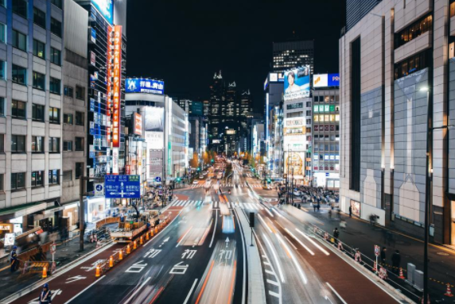

Voyage à Tokyo
Forfait TOKYO 10 jours
Traditionnellement, il a été dit que l'origine de Tokyo remonte au 12ème siècle, jusqu'à ce que des vestiges mis au jour lors des travaux de construction de la rue Yayoy révèlent que la zone était habitée depuis le 3ème siècle avant JC.
Tokyo est la ville la plus peuplée de la planète, une mégalopole dans l'agglomération de laquelle vivent plus de 37 millions de personnes.
- Hôtel 4* et 1/2
- 9 nuitées et 7 déjeuners
- Internet WIFI GRATUIT à l'hôtel
- Mini-réfrigérateur
- Salle de sports ouverte 24h/24h
- Mini-réfrigérateur, four micro-ondes, cafétière dans la chambre
- Piscine intérieure
- Restaurant & Bar
- Shinjuku est à côté de Shibuya, le quartier le plus cosmopolite et le plus animé de Tokyo, avec ses néons, ses habitants "à la mode" et son atmosphère 24h/24.
- L'ambiance incroyable et la vie nocturne animée font de Shibuya notre quartier préféré de Tokyo, sans oublier Shinjuku.
- En plus d'être le centre névralgique de la mode, Harajuku est aussi le rendez-vous des personnages les plus geeks et colorés de Tokyo.
- Ginza est généralement comparée à la Cinquième Avenue à New York, le quartier le plus élitiste et le plus cher de la ville.
- Le musée national de Tokyo est le plus grand et le plus ancien musée de tout le Japon. La visiter est un bon moyen de se familiariser avec la culture et l'histoire du pays.
- Le musée Edo-Tokyo est composé de pièces originales, de maquettes et de répliques d'objets et de bâtiments qui rappellent l'histoire de Tokyo de la fin du XVIe siècle à sa révolution industrielle.
- Le musée national des sciences et de l'innovation de Tokyo, communément appelé musée Miraikan, est situé à Odaiba.
- S'il est une excursion au départ de Tokyo qui s'impose, c'est bien la visite du mont Fuji, symbole du Japon et l'un de ses paysages les plus vénérés. Découvrez la beauté unique de cette montagne sacrée et découvrez l'histoire du volcan le plus célèbre du pays.
- Par personne : $7000
- Occupation Double : $6800
- Occupation Triple : $6700
- Ocupation Quadruple: $6600
- Enfants (10 ans et moins) : $6000
- 03/Jan/2022
- 17/Jan/2022